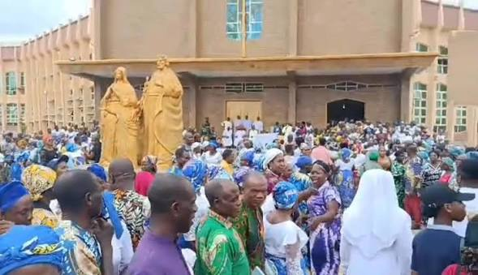
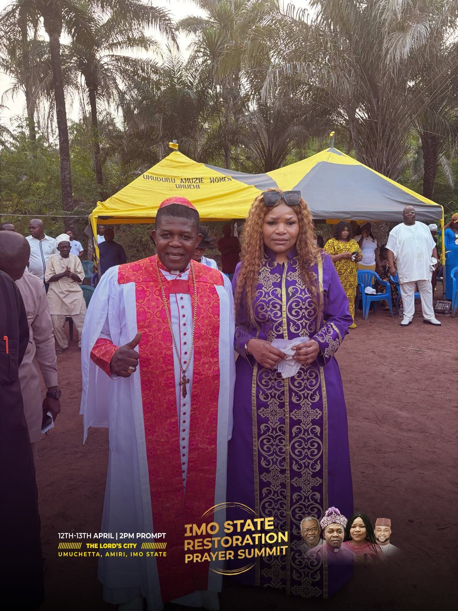

The Lord's City Adoration Ground
Amiri Village, Oru East LGA, Imo State, Nigeria — a hub for worship, education, healthcare and community development.
A Transformative Hub for the Community
The Lord's City Adoration Ground is a multipurpose community project development complex located in Amiri, a growing community in Oru East Local Government Area of Imo State. Positioned near Atta and Ubarazor, the project is designed to serve as a transformative hub for education, healthcare, skills development, commerce, hospitality and spiritual growth.
Overseers: Bishop Dr. Vitalis Odumma & Rev. Grace Odumma
This vision is being built step by step through faith, prayer and the generosity of partners who believe in lasting community transformation. Every stage of development brings Lord's City closer to serving more children, families and local residents with practical care, opportunity and hope.
Location
Amiri Village, Oru East LGA, Imo State, Nigeria
Overseers
Bishop Dr. Vitalis Odumma & Rev. Grace Odumma
Support This Project
£100,000 — Phase one of a £1M community development project.
What Lord's City Will Provide
Lord's City is a place of worship, prayer, spiritual renewal and community fellowship where believers gather to experience God's presence and grow in faith.
Education Centre
A dedicated learning facility serving children and young people in the Amiri community.
Healthcare Facility
Accessible medical support and health services for local families and residents.
Skills Development
Vocational training and skills programmes to empower individuals with practical capabilities.
Worship & Spiritual Growth
A central place of prayer, praise and community fellowship rooted in faith.

Transforming Lives Through Worship & Outreach
Through worship services, prayer gatherings, discipleship programmes, counselling and outreach initiatives, Lord's City continues to transform lives and bring hope, encouragement and spiritual growth to individuals, families and communities.
See Prophetic Shift EventSee Lord's City Come to Life
Find Lord's City
Be part of Lord's City
Your gift helps build a hub of education, healthcare, skills and worship in Imo State.